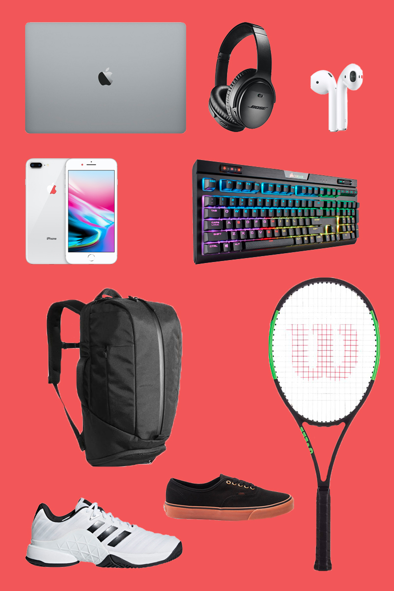
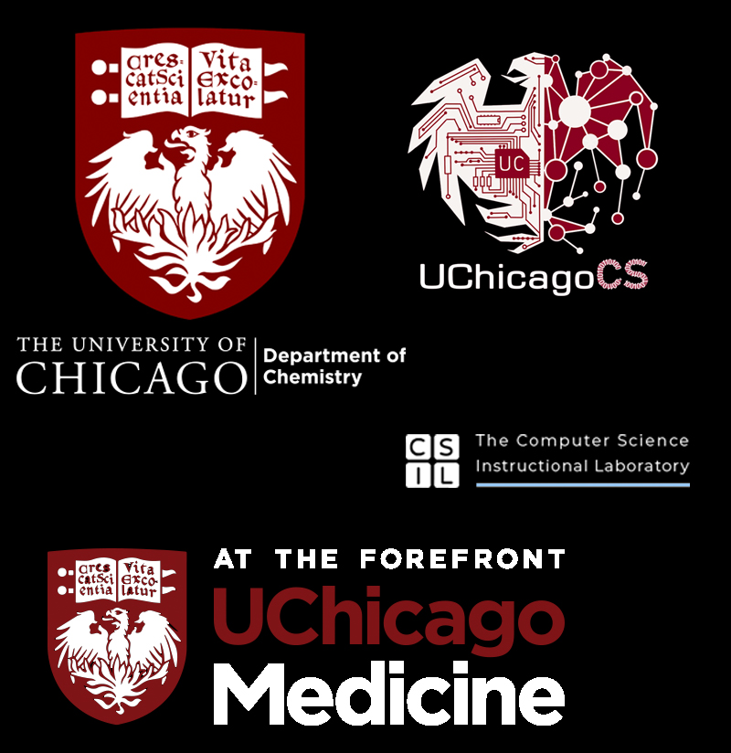
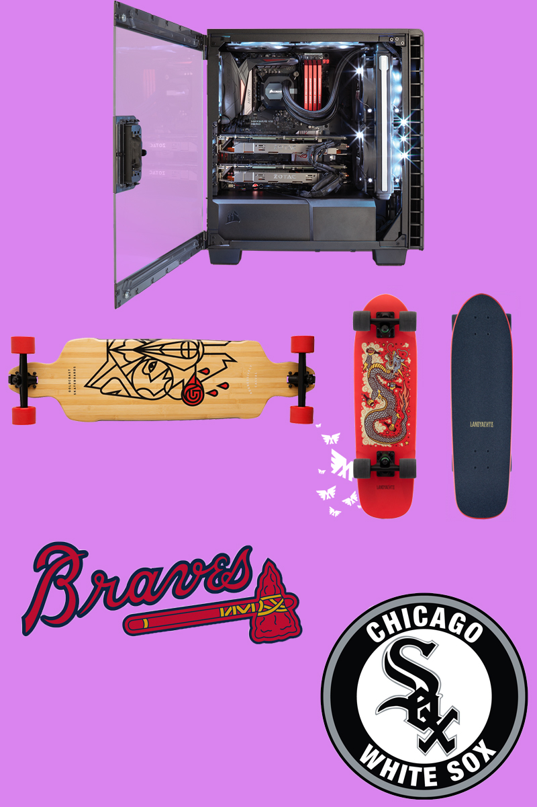
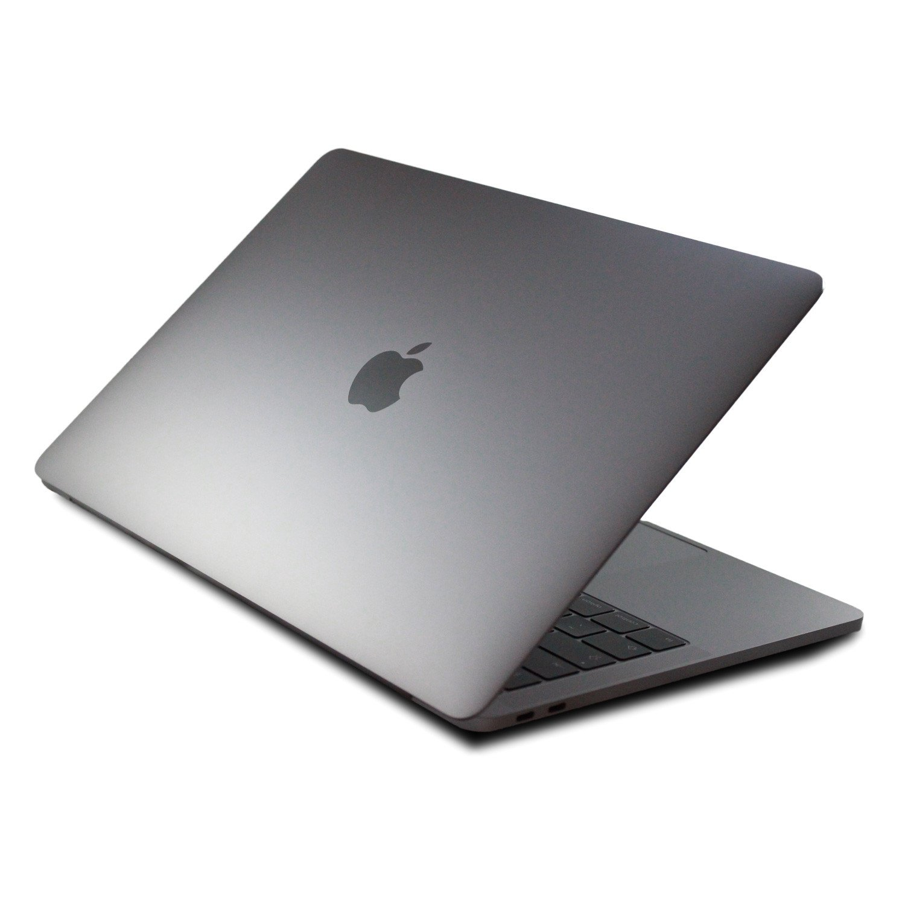

Love yourself for who you are, and trust me, if you are happy from within, you are the most beautiful person, and your smile is your best asset. - Ileana D'Cruz
Jeremy Yuan
- Student-Athlete
- Photography Enthusiast
- Gamer
- Technology Aficionado
- Armchair Baseball Analyst

Personal Details
My name is Jeremy, but a lot of my friends call me Jer. I’m currently 20 years old, and I was born in Atlanta, Georgia. I grew up in Johns Creek, a northwest suburb about a thirty minute drive from the city.
Throughout middle and high school, I was a dedicated tennis player, practicing an average of 5 hours a day and traveling all throughout the Southeastern states on the weekends.
I originally created this website purely as a side project to work on during my free time, but I quickly realized that college didn’t provide me with much free time. From there, my focus for this website shifted to not only a location for me to motivate my learning through sharing and discourse but also to relieve stress by writing down my thoughts.
Currently, as of summer 2019, I am working as a back-end developer and a laboratory intern in a tobacco biomarker R&D laboratory at the Centers for Disease Control and Prevention in Atlanta, GA.
Interests
Currently, my interests revolve around technology and specifically their role in medicine. Out of all the technology fields, medical tech progresses and advances the slowest, usually due to testing and ethical issues.
New patient-side advancements like health care mobile apps, remote monitoring, and improved patient-doctor communication as well as doctor-side advancements like big data, robotic surgery, and accelerated experimentation are starting to play a larger and larger role in the treatment of disease as well as improvement of overall public health. Specifically, I am especially interested in accelerated experimentation and software developments to improve patient care in hospitals.
Some interesting studies and topics I have read about include:
- Social Network Research involving the transmission of Zika Virus among primates
- Developing software to automate clinical decisions
- Burn, dental and craniofacial wound treatment methods for soldiers injured during combat.

School
I am a third-year student at the University of Chicago in Chicago, IL. I am pursuing two Bachelor’s degrees in chemistry and computer science.
Currently, I am a tutor at the Computer Science Instructional Laboratory. Previously, I have volunteered and been a research assistant for the University of Chicago Hospitals.
In the future, I would like to attend medical school, possibly pursue other degrees after my third year, and practice as a doctor.
Outside of my studies, I play varsity tennis for the University. In my first year, I was chosen as my conference Most-Valuable-Player and Rookie of the Year as well as the Order of the C Rookie of the Year. So far, I am a three-time All-American, 3-time central region champion, and a national champion.
Hobbies
Gaming:
Although my time for games was cut severely in college, I am still an avid fan of games. I recently built my fifth desktop (r/pcmasterrace) and keep up to date with the latest PC hardware news. When I have time, I like to play League of Legends or Counter-Strike Global Offensive with friends and coworkers. On my own time, I like to play competitive Pokemon on pokemonshowdown.com and Maplestory. In the past, I have completed every single Pokemon game in the main franchise at least 5 times and have played Overwatch, Hearthstone, and Fortnite. My favorite single player games are the Witcher series, Persona 5, Zelda: Breath of the Wild, Kirby and the Amazing Mirror, osu!, and Tomb Raider.
×
PC Specs:
- Intel i7-8700 Coffee Lake 6-Core 3.2 GHz Processor
- ASUS ROG Strix Z370-E Gaming Motherboard
- EVGA Geforce GTX 1080 Graphics Processor
- Corsair Vengeance LPX 16GB (2 x 8GB) 288-Pin DDR4 3000 RAM
- Intel Optane Memory Module 32GB
- Seagate 2TB BarraCuda SATA 6GB/s 7200 RPM 64MB Cache Harddrive
- Corsair CX Series 750 Watt Power Supply
- Corsair Hydro Series H60 AIO Liquid CPU Cooler
- Corsair Carbide Series Clear 400C White Steel ATX Mid-Tower Case
Skatboarding:
I didn’t know anything about skateboarding until I came to college. My two roommates, both from San Diego, showed me how to skateboard. They took me down a downhill parking garage on campus, so if you didn’t know how to skate, you would fall down hard. After wiping out twice, I learned how to skate. Currently, I own ten board from an assortment of brands, my favorite being Goldcoast, Landyachtz, Penny Australia, and Real Skateboards.
Baseball:
I am a huge Atlanta Braves and Chicago White Sox fan. I always believed it was appropriate to be a fan of one NL team and one AL team at the same time. My father enjoyed watching the star-studded Braves lineup in the 1990’s and that led to my childhood room being filled with posters of Greg Maddux, Tom Glavine, and John Smoltz. Although I am a Braves and White Sox fan, I am a fan of the game in general and my dream is to visit every single MLB stadium in the nation. I own jerseys of many of the players I like or liked to watch, including Tim Lincecum, Shohei Ohtani, and Chipper Jones.


Music
I have a very wide variety of musical tastes; I will generally listen to anything except for RnB music. Some of favorite artists in each genre are given below in no particular order.
Pop:
- Camila Cabello
- Ava Max
- Bruno Mars
Hip-Hop:
- Young Thug
- Lil Uzi Vert
- Logic
Country:
- Florida Georgia Line
- Rascal Flatts
- Carrie Underwood
EDM:
- Marshmello
- nanobii
- Martin Garrix or Alan Walker
Rock:
- The Beatles
- Paramore
- Fleetwood Mac
Classical:
- Mussorgsky
- Handel
- Yiruma
Korean Pop:
- Girls Generation
- Buzz
- Super Junior
Food and Drink:
At the beginning of my second year of college, I became lactose intolerant, which cut the number of foods I could eat and enjoy by half.
I’m a picky eater, but I am always ready to try out new restaurants or types of food.
Food:
- All types of rice
- Hand-pulled soup noodles
- Potstickers
- Eggs (sunny-side up, scrambled, or poached only)
- Korean Barbecue
Drinks:
- Coconut Water
- Sweet Tea
Favorite Restaurants:
- Ramen-San (Chicago)
- Osulloc Tea House (Seoul)
- QXY Dumpling House (Chicago)
- Honey Pig (Atlanta)
- Oiistar (Chicago)
- Chipotle
- Breakers Korean Barbecue (Atlanta)
- Sushi Para II (Chicago)
- Hujing (Wuhan)
Television/Movies:
I don’t enjoy watching movies. I personally hate going to the movie theatre and would much rather watch a movie at home once it comes out later. I enjoyed watching korean dramas before coming to college, but I am not a huge TV or movie person.
Some of my favorite shows/dramas/movies are:
- Dr. Stranger (Drama)
- Dream High (Drama)
- Descendants of the Sun (Drama)
- Big Bang Theory (TV Show)
- House MD (TV Show)
- Gag Concert (K-TV Show)
- Knowing Brother (K-TV Show)
- Reply 1988 (Drama)
- Interstellar (Movie)
- Spiderman: Homecoming (Movie)
- Deadpool 2 (Movie)